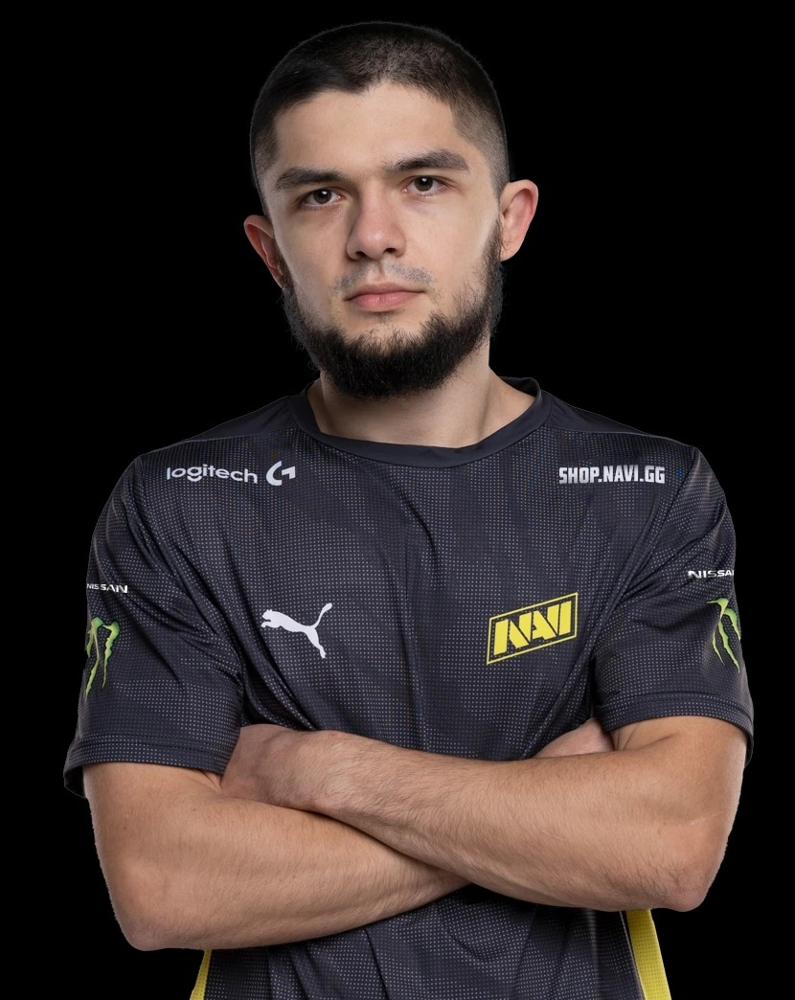

Пуджа если есть возможность, надо пикать первым потому ,что потому ,а там уже кто останется того и пикаете
Я вхожу в топ 10 снг на пудже наверно
Мне больше всего из персов в доте нравится пудж, а потом шэдоуфид, все остальные так себе
Пудж мне нравится тем, что на нем можно делать лютые стянув, стянув, и на изях чела попускать в лобби
По доте есть киберспорт и там играет наша русскоязычная команда Нави
Я считаю, что надо ливать из доты в геншин
пон
Этот сайт создан легендой пустыря 228-Даней Мирным
Снизу мои кенты
